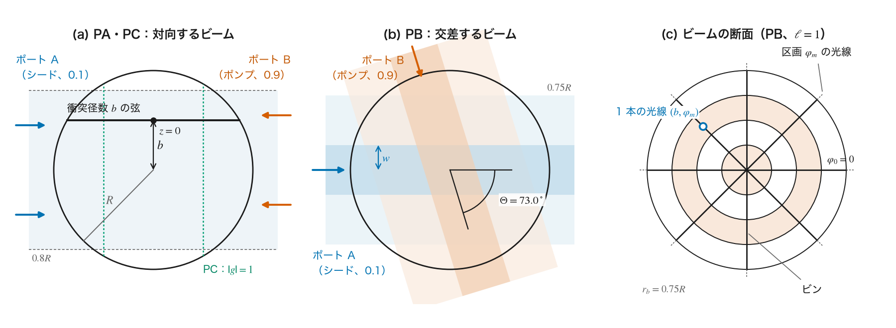
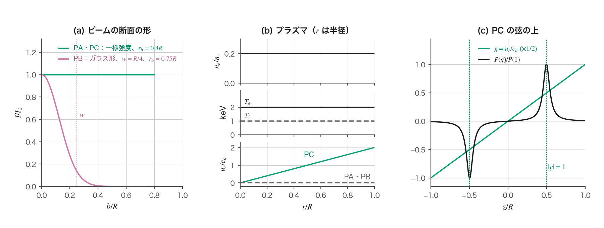
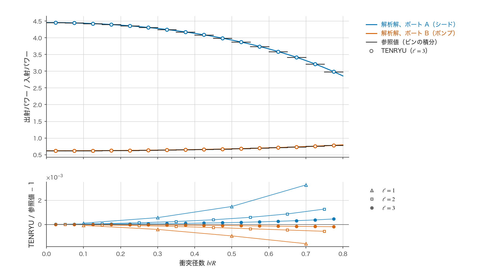
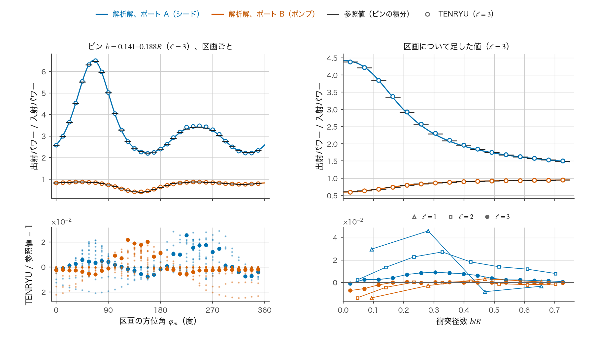
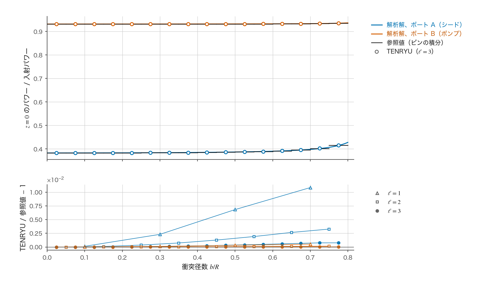

CBET の解析解による検証reference
要旨
1D 球対称の交差ビームエネルギー転送（cross-beam energy transfer、CBET）の計算（port_section モード。CBET の頁）を、解析解（closed-form solution）が知られた 3 つの問題と比べて検証した。屈折も吸収もない一様なプラズマ球に 2 本のビームを入れ、本番の計算と同じレーザーの時間刻みの関数を GPU で 1 回実行し、ビームごとの出射パワーと、衝突径数ビンと区画ごとの出射パワーを、解析解をビンについて積分した値と比べた。問題は、対向する一様強度のビームの減耗（PA）、交差するガウスビームの減耗（PB）、線形の流れの中で共鳴を通る対向ビーム（PC）である。最も細かい解像度の段 \(\ell=3\) で、ビームの出射パワーの相対誤差は PA で \(2.0\times10^{-4}\)、PB で \(3.9\times10^{-3}\)、PC の入射側の端のパワーの相対誤差は \(4.5\times10^{-4}\) であり、文献の目安 1 % を下回った。ビンと区画への分布の誤差は \(1.5\times10^{-4}\)（PA）、\(6.8\times10^{-3}\)（PB）、\(3.6\times10^{-5}\)（PC）で、解像度を 2 倍にするごとに減り、観測された次数は 1.61、1.17、2.11 である。交換を止めた入射場は、直線の弦に沿う独立な和と \(1.5\times10^{-8}\) 以内で一致した。係数を 1 つずつ誤らせた 13 通りの参照値は、いずれも受入れの範囲から外れた。
はじめに
CBET は、プラズマの中で交わる 2 本のレーザー光が、イオン音波を介してパワーを交換する現象である。TENRYU の 1D 球対称の計算は、1 本の参照の光線追跡を各ビームの向きへ回転し、ビームの断面を衝突径数（impact parameter。光線とビームの軸との距離）のビンと方位角の区画（section）に分け、光線の各点で他のビームの場から利得を受け取らせる（CBET の頁の再構成の節）。交換の量は、すべての光線の利得を同時に満たすようにニュートン法で解く（交換の解き方）。
光線にもとづく CBET のモデルは、コードごとに実装の細部が大きく異なる。Follett ら [1] は、光線のコードにどこまでの精度が可能かが明確でない理由の一つとして、試験問題に使える解析的な結果がきわめて少ないことを挙げている。TENRYU の計算が、離散化を細かくした極限で正しい方程式に帰着することを示すには、方程式の解が閉じた形で分かっている問題で、誤差の大きさと、解像度に対する誤差の減り方を確かめる必要がある。
解析解が成り立つのは、屈折のない一様な媒質の中を、平行な光線が直進する場合である。このとき光線は弦に沿って進み、同じビームの隣り合う光線は交わらない。したがって、コースティック（caustic。光線の族の包絡線で、幾何光学の強度が発散する所 [6]）は生じない。TENRYU の CBET がコースティックの近くで使う場の上限とポンプ乗数ははたらかず、残るのは、セル・光線・ビン・区画による離散化の誤差と、反復の許容値と丸めの誤差だけになる。逆に、屈折、コースティックとその近くの扱い、吸収と交換の相互作用は、この検証の範囲の外にある（限界の節）。
試験は tests/laser/test_cbet_physics_closed_forms.cu にある。プラズマの状態を一様な値で満たし、本番と同じレーザーの時間刻みの関数（laser_step）を 1 回呼ぶ。出射パワーと各光線の記録のパワーは CBET の作業領域から読み、反復の収束やポンプ乗数は本番が出力する [cbet] のログの行から読む。本頁の数値は、2026 年 11 月 12 日に 1 枚の GPU（NVIDIA RTX PRO 6000 Blackwell Max-Q）で実行したこの試験の出力であり、4 つの試験はすべて合格した。
計算の設定
幾何
媒質は半径 \(R=0.02\) cm のプラズマ球である。2 本のビーム（ポート A と B）が球の外から入射する。図 A に 3 つの問題の配置を示す。

PA と PC では、ポート A の軸は単位ベクトル \((0.36,0.48,0.80)\)、ポート B の軸はその逆向きで、二つのビームは同じ軸の上を向かい合って進む（\(\hat d_A\cdot\hat d_B=-1\)。\(\hat d\) はビームの進む向きの単位ベクトル）。断面は半径 \(r_b=0.8R\) の一様強度（flat-top）である。PB では、ポート B の軸を \((0.60,-0.64,0.48)\) とし、二つのビームの進む向きは \(\cos\Theta=\hat d_A\cdot\hat d_B=0.2928\)（\(\Theta=72.97^\circ\)）で交差する。断面は強度が \(e^{-2b^2/w^2}\) に比例するガウス形で、半径 \(w=R/4\)、\(r_b=0.75R\) で打ち切る。打ち切りの外にあるパワーは全体の \(1.5\times10^{-8}\) である。焦点を \(10^7\) cm の遠方に置くので、各ビームの光線は平行であり、光線の傾きは \(1.6\times10^{-9}\) rad 以下である。
パワーの重みはポート A が 0.1、ポート B が 0.9 である。以下ではパワーの小さいポート A をシード（seed）、大きいポート B をポンプ（pump）と呼ぶ。PA と PB では、ポート A はレーザーの波長 351 nm のままとし、ポート B の角周波数を \(\Delta\omega\) だけ高くする（離調。周波数の高いビームがパワーを渡す）。PC では両ビームを同じ周波数とする。各光線の経路は、転回点で入射側と出射側の 2 枚のシート（sheet。CBET の頁の用語）に分かれる。直線の弦では、入射側のシートは入射点から \(z=0\) まで、出射側のシートは \(z=0\) から出射点までである。
プラズマ
プラズマの状態は球の中で一様である（図 B）。規格化した電子密度は \(\hat n_e=n_e/n_c=0.2\)（\(n_c\) は臨界密度。\(n_e=1.81\times10^{21}\ \mathrm{cm^{-3}}\)）、電離度は \(Z=3.5\)、平均の質量数は \(A=6.5\)、電子温度は \(T_e=2000\) eV、イオン温度は \(T_i=1000\) eV である。音速は \(c_a=[(ZT_e+3T_i)/(Am_p)]^{1/2}=3.84\times10^{7}\) cm/s（この式では温度を erg に換算する。\(m_p\) は陽子の質量）、イオン音波の減衰率は \(\alpha_{iaw}=0.2\) である。流れは PA と PB では 0、PC では中心から外へ向かう線形の流れ \(u_r=2c_ar/R\) である。

解像度の段
解像度の段 \(\ell\) では、セルの数を \(16\cdot2^\ell\)、1 本のビーム当たりの光線の数を \(64\cdot2^\ell\)、衝突径数ビンの数を \(2\cdot2^\ell\) とし、すべてを同時に 2 倍にする（表 1）。セルは半径について等間隔、ビンは衝突径数について等間隔である。区画の数は、二つのビームが同じ軸の上にある PA と PC では 16 に固定する。軸のまわりの対称性から、ポンプの場は方位角に依らず、結果は区画の数に依らない。交差する PB では区画の数も \(4\cdot2^\ell\) と 2 倍にする。CBET の反復の許容値は \(10^{-9}\)、反復の上限は 200 回である。
| \(\ell\) | セル | 光線 | ビン | 区画（PA・PC） | 区画（PB） | 使う問題 |
|---|---|---|---|---|---|---|
| 1 | 32 | 128 | 4 | 16 | 8 | PA、PB、PC |
| 2 | 64 | 256 | 8 | 16 | 16 | PA、PB、PC、PZ |
| 3 | 128 | 512 | 16 | 16 | 32 | PA、PB、PC |
解析解のための単純化
解析解を得るため、試験は次の単純化を置く（表 2）。どれも本番の経路のコードを変えずに、入力の値だけで作る。各単純化が本番の出力でも成り立っていることを、試験は実行ごとに確かめる。
| 単純化 | 作り方 | 試験での確かめ |
|---|---|---|
| 一様な媒質（密度・温度・電離度が一定） | プラズマの状態を一様な値で満たす | 各ポートの光線追跡が使う媒質の \(\hat n_e\) が、すべての節点で \(0.2\) と相対 \(10^{-9}\) 以内で一致する |
| 屈折がなく光線が直進する | 一様な媒質と、\(10^7\) cm の遠方の焦点（傾き \(\le1.6\times10^{-9}\) rad） | 交換を止めた実行で、光線の路程が直線の弦の和と一致する（入射場の検査） |
| 吸収がない | 逆制動輻射の吸収係数を試験用の設定で \(10^{-30}\) に置き換える | プラズマへの沈着が入射パワーの \(10^{-12}\) 倍以下（実測 \(3.0\)〜\(3.9\times10^{-32}\) 倍） |
| 離調が一定（PA・PB）、または弦に沿って線形（PC） | ポート B の波長のずれ \(\Delta\lambda\) と、PC の流れ \(u_r=2c_ar/R\) | \(g\) の符号・大きさ・音速の式を誤らせた参照値が受入れから外れる（対照の 3、5、6、10、12） |
| 周波数が飛行中に変わらない | 本番の経路にこの効果がない | この効果を入れた参照値が受入れから外れる（対照 13） |
| コースティックがなく、場の上限とポンプ乗数がはたらかない | 平行な光線と一様な媒質 | ログの行で、コースティックの近くの寄与が 0、場の上限がはたらいた点が 0、ポンプ乗数が 1 で 1 回で決まり、失敗時の代わりの処理がない |
| 交換が定常の解に達している | 反復の許容値 \(10^{-9}\) | ログの行で反復が収束している |
解析解
共通の利得の式
利得の式は CBET の頁の利得モデルと同じである。シードの光線の強度 \(I_A\) は、ポンプの強度 \(I_B\) を受けて、光線に沿う距離 \(s\) について
$$ \frac{dI_A}{ds}=\kappa\,I_B\,I_A,\qquad \kappa=K_0\,\frac{\hat n_e}{1-\hat n_e}\,H\,P(g),\qquad K_0=\frac{\lambda_0e^2}{m_ec^3}\frac{Z}{ZT_e+3T_i},\qquad H=\frac{1+(\hat d_A\cdot\hat d_B)^2}{4} $$に従って増え、ポンプは同じ量を失う。ここで \(\kappa\) は利得係数、\(\lambda_0\) はレーザーの波長、\(e\) と \(m_e\) は電子の電荷と質量、\(c\) は光速、温度 \(T_e,T_i\) は erg で表す。\(H\) は偏光の平均の因子で、較正係数 f_cbet を 1 とした値である。\(P(g)=\alpha_{iaw}g/[(\alpha_{iaw}g)^2+(1-g^2)^2]\) はイオン音波の応答関数で、\(g\) は規格化した離調量（CBET の頁の式）である。\(P\) は \(g\) の奇関数で、\(|g|=1\) で値 \(\pm1/\alpha_{iaw}=\pm5\) をとる。強度はパワー毎面積である。媒質が一様で光線が直進するので、光線の管の断面積は一定であり、光線のパワーは強度に比例する。各問題のポンプの強度は、利得の指数が決まった値になるように選ぶ（各問題の解の段落）。
PA：対向する一様強度のビーム
方程式。衝突径数 \(b\) の弦に、シードの入射点を \(s=0\)、出射点を \(s=\ell_b=2\sqrt{R^2-b^2}\) とする座標をとる。シードは \(+s\) の向きに、ポンプは \(-s\) の向きに進む。ポンプは自分の進む向きに利得の分だけ減るので、
$$ \frac{dI_A}{ds}=\kappa I_AI_B,\qquad \frac{dI_B}{ds}=\kappa I_AI_B $$となる。これは Randall ら [2] の Eq. (1) で吸収を 0 とした式である。境界の条件は \(I_A(0)=I_{A0}\)、\(I_B(\ell_b)=I_{B0}\) である。\(H=1/2\) で、離調はポート B の角周波数のずれ \(\Delta\omega=2\bar kc_ag\)（\(\bar k=(\omega_0/c)\sqrt{1-\hat n_e}\) はプラズマ中の光の波数、\(\omega_0\) はレーザーの角周波数）で与える。対向するビームではうなりの波数が \(|\mathbf k_a|=2\bar k\) なので、この \(g\) がそのまま利得モデルの規格化した離調量になる。\(\kappa\) は弦に沿って一定である。
仮定。一様な媒質、直進する光線、吸収なし、定常、一定の \(\kappa\)（表 2）。
導出。二つの式の差から \(I_B-I_A\) は弦に沿って一定である。これを \(\delta I_{B0}\) と書くと、\(dI_A/ds=\kappa I_A(I_A+\delta I_{B0})\) となり、変数を分けて \(s=0\) から \(\ell_b\) まで積分すると、\(\ln[I_A/(I_A+\delta I_{B0})]\) の増分が \(\kappa\delta I_{B0}\ell_b\) に等しい。出射点では \(I_A+\delta I_{B0}=I_B(\ell_b)=I_{B0}\)、入射点では \(I_{A0}+\delta I_{B0}=I_B(0)\) である。
解。強度比 \(B=I_{A0}/I_{B0}=1/9\) と利得の指数 \(G=\kappa I_{B0}\ell_b\) を使うと、
$$ I_A^{\rm out}=(1-\delta)\,I_{B0},\qquad I_B^{\rm out}=(\delta+B)\,I_{B0},\qquad (1-\delta)(\delta+B)=B\,e^{G\delta} $$である。ここで \(\delta\) は最後の式の \(0<\delta<1\) の根である。\(1-\delta\) を Randall ら [2] の \(R\)、\(G\) を \(Q\) と置けば、最後の式は彼らの Eq. (2)（Tang の式）に一致する。試験はこの根を 2 分法で \(2^{-60}\) まで求める。ポンプの強度は \(\kappa I_{B0}R=1\)、すなわち中心の弦で \(G=2\) となるように選ぶ。中心の弦ではシードは入射の 4.45 倍に増え、ポンプは 0.62 倍に減る。ポンプの減耗がなければシードは \(e^G=7.39\) 倍になるので、減耗は大きな効果である。
離調は \(g=0.5,1,1.5\) の 3 通りを計算する。\(g\) を変えると応答 \(P(g)\) が変わるが（\(P(0.5)=0.175\)、\(P(1)=5\)、\(P(1.5)=0.181\)）、試験はポンプの強度を選び直して \(\kappa I_{B0}R=1\) を保つ。したがって 3 通りの解析解は同じ形である。本番の経路では \(g\) は周波数の差から求められ、ポンプの強度とは独立に \(\kappa\) に入る。
PB：交差するガウスビーム
方程式。二つのビームは角 \(\Theta\) で交差する。両方の進む向きを含む平面（これに垂直な座標を \(y\) とする）の中で、シードは自分の向きに沿って \(\kappa I_AI_B\) の率で増え、ポンプは自分の向きに沿って同じ率で減る。McKinstrie ら [3] はこの定常の方程式（Eqs. (3)–(4)）を二つのビームの向きに沿う座標で書き、入射の断面が任意の場合の解を閉じた形で与えた（Eqs. (5)–(9)）。屈折のない一様な媒質では、交換は \(y\) の異なる平面の間で独立である。離調は \(\Delta\omega=\bar k\,|\hat d_A-\hat d_B|\,c_a\) で、\(g=1\)（共鳴）である。
仮定。PA と同じ。加えて、二つのビームが交わる領域が球の中に入っていること。ガウス形の断面の半径 \(w=R/4\) は球の半径の 1/4 なので、パワーの大部分はこの条件を満たす。
解。平面 \(y\) の中で、シードの光線の横の位置を \(t\)（その平面の中でシードの向きに垂直な座標）とする。McKinstrie ら [3] の Eqs. (8)–(9) をこの問題の記号で書くと、
$$ I_A^{\rm out}=\frac{I_{A0}f\,e^{\kappa I_{A0}E}}{e^{\kappa I_{A0}E}-1+e^{-\kappa I_{B0}E_{\rm tot}}},\qquad I_B^{\rm out}=\frac{I_{B0}f\,e^{-\kappa I_{B0}E}}{e^{\kappa I_{A0}E_{\rm tot}}-1+e^{-\kappa I_{B0}E}}, $$ $$ E(t,y)=\frac{E_{\rm tot}(y)}{2}\Bigl[1+{\rm erf}\Bigl(\frac{\sqrt2\,t}{w}\Bigr)\Bigr],\qquad E_{\rm tot}(y)=w\sqrt{\frac{\pi}{2}}\,e^{-2y^2/w^2},\qquad \kappa=\frac{K_0}{\sin\Theta}\,\frac{\hat n_e}{1-\hat n_e}\,\frac{1+\cos^2\Theta}{4}\,P(1) $$である。ここで \(f=e^{-2b^2/w^2}\) は光線の位置での断面の形、\(E\) は相手のビームの光線がこの光線に達するまでに横切った、このビームの断面の形の積分、\(E_{\rm tot}\) はその平面での断面の形の積分の全体である。利得係数の \(1/\sin\Theta\) は、相手のビームの横幅 \(dt\) を横切る路程が \(dt/\sin\Theta\) であることから来る。\(H=(1+\cos^2\Theta)/4=0.271\) である。ポンプの強度は \(\kappa I_{B0}E_{\rm tot}(0)=2\) となるように選ぶ。
小さい \(t\) の側のシードの光線は減耗していないポンプに出会い、最大で \(e^2\) 倍近くまで増える。大きい \(t\) の側の光線は、手前の光線に減耗させられたポンプに出会うので、増え方が小さい。二つのビームの向きが異なるので、ポンプの場は区画（ビームの軸のまわりの方位角）ごとに異なる。区画の離散化の収束を確かめるのはこの問題だけである。
PC：線形の流れの中の対向ビーム
方程式。二つのビームは PA と同じ軸の上を向かい合って進み、周波数は等しい（\(\Delta\omega=0\)）。弦の上の位置を、弦の中点（転回点）からの符号つきの距離 \(z\) で表す。流れ \(u_r=2c_ar/R\) の弦の向きの成分は \(u_z=2c_az/R\) で、規格化した離調量は衝突径数に依らず \(g=2z/R=z/L_e\)（\(L_e=R/2\)）となる（図 B(c)）。共鳴 \(|g|=1\) は \(z=\pm L_e\) の両側にある。このような流れの勾配の中の共鳴を通る交換は Kruer ら [4] が扱い、その Eq. (7) は線形の流れの中の利得の積分を逆正接の形で与える。方程式は PA と同じで、利得係数 \(\kappa=\kappa_0P(z/L_e)\)、\(\kappa_0=K_0\hat n_e/(2(1-\hat n_e))\) が \(z\) とともに変わる。
仮定。PA と同じ。加えて、流れは定常で、光の周波数は飛行中に変わらない。
導出。PA と同じく、\(D=I_A-I_B\) は弦に沿って一定である。シードの入射点から測った \(\sigma(z)=\int\kappa_0P\,ds\) を独立変数にとり、\(y=1/I_A\) と置くと、\(dI_A/d\sigma=I_A(I_A-D)\) は線形の式 \(dy/d\sigma=Dy-1\) になり、
$$ I_A=\Bigl[\frac1D+\Bigl(\frac1{I_{A0}}-\frac1D\Bigr)e^{D\sigma}\Bigr]^{-1},\qquad I_B=I_A-D $$を得る。\(P\) は奇関数なので、弦の全長にわたる \(\sigma\) は 0 である。したがって、シードは弦の前半（中心へ向かう部分）でパワーをポンプへ渡し、後半では役割が入れ替わって同じ量を取り戻す。出射のパワーは入射に等しく、\(D=I_{A0}-I_{B0}\) が厳密に成り立つ。
解。入射側のシートの終わり \(z=0\) では、
$$ \sigma(0)=-\kappa_0L_e\,F\!\Bigl(\frac{\sqrt{R^2-b^2}}{L_e}\Bigr),\qquad F(x)=\int_0^x P(g)\,dg=\frac{1}{d}\Bigl[\arctan\frac{2x^2-2+\alpha_{iaw}^2}{\alpha_{iaw}d}+\arctan\frac{2-\alpha_{iaw}^2}{\alpha_{iaw}d}\Bigr],\qquad d=\sqrt{4-\alpha_{iaw}^2} $$である。ポンプの強度は \(\kappa_0L_eF(2)I_{B0}=1\) となるように選ぶ。中心の弦の \(z=0\) で、シードは入射の 0.383 倍、ポンプは 0.931 倍まで下がる。出射のパワーは入射に等しいので、出射パワーの比較は、この問題では交換を検査しない。試験は代わりに \(z=0\) のパワーを比べる（次節の \(E_M\)）。
比べる量と判定
TENRYU の出力。試験は CBET の作業領域から、各光線の記録のパワーを読む。出射パワーは各光線の最後の記録、PC の入射側の端のパワーは入射側のシートの最後の記録である。これを区画 \(m\) と衝突径数ビン \(\beta\) ごとに足したものを \(P^{\rm out}_{m\beta}\)（PC では \(P^{\rm in}_{m\beta}\)）、全光線について足したものをビームの出射パワー \(P^{\rm out}\) とする。
参照値。解析解は光線ごと（または平面ごと）の出射の強度 \(I^{\rm out}(b,\varphi)\) を与える。ビン \(\beta\) の参照値は、そのビンの衝突径数の範囲 \([b_\beta,b_{\beta+1}]\) での積分 \(\int I^{\rm out}\,2\pi b\,db\) である。PB では、区画 \(m\) の方位角 \(\varphi_m=2\pi m/N_s\) での積分値を区画の数 \(N_s\) で割る。積分は 8 点のガウス求積で、区間を 2 つに分けながら、変化がそのビームの入射パワーの \(10^{-12}\) 倍以下になるまで細かくする。参照値は解析解そのものの積分であり、TENRYU の離散化（光線の位置やセル）を使わない。
誤差の指標。比べる量は次の 3 つである。
$$ E_T=\max_{\text{port}}\left|\frac{P^{\rm out}}{P^{\rm out}_{\rm ref}}-1\right|,\qquad E_D=\frac{1}{P}\sum_{\text{port},\,m,\,\beta}\bigl|P^{\rm out}_{m\beta}-P^{\rm out}_{{\rm ref},m\beta}\bigr|,\qquad E_M=\max_{\text{port}}\left|\frac{\sum_{m\beta} P^{\rm in}_{m\beta}}{\sum_{m\beta} P^{\rm in}_{{\rm ref},m\beta}}-1\right|. $$ここで \(P\) は二つのビームの入射パワーの和である。\(E_T\) は各ビームの出射パワーの相対誤差の大きい方、\(E_D\) はビンと区画への分布の誤差を入射パワーで規格化したもの、\(E_M\) は PC の入射側の端のパワーの相対誤差である。PC では \(E_D\) も入射側の端のパワーで計算する。交換の総和（保存の残差）\(\mathcal R_0\) はシードが得たパワーとポンプが失ったパワーの差で、本番のログの行から読む。
判定。最も細かい段 \(\ell=3\) で、\(E_T\le0.01\)（PC では \(E_M\le0.01\) も）、\(E_D\le0.05\)、\(|\mathcal R_0|\le0.01P\) を求める。1 % の値は、光線のコードが 1 % の精度と、補正しない 1 % のエネルギー保存の誤差を達成できるという Follett ら [1] の結論（p. 14）による。\(E_D\) の 5 % は文献に値がなく、TENRYU が決めた値である。3 段を計算する場合は、\(\ell=3\) の \(E_T\)（PC では \(E_M\) も）が、\(\ell=1\) の値と、ほかの誤差から見積もった各量の下限の大きい方を超えないことを求める。\(|\mathcal R_0|\) の上限は、\(\ell=1\) の値と入射パワーの百万分の一の大きい方である。また、観測の次数 \(p=\log_2(E_D^{(\ell)}/E_D^{(\ell+1)})\) が 0.9 以上であることを求める。0.9 は形式の次数 1（収束の節）の 10 % 下で、観測の次数が形式の次数と 10 % 以内で一致すれば検証とみなすという Oberkampf と Roy [5] の目安（p. 342）による。次数を求める段の組は細かい側から調べ、両方の段の \(E_D\) が、ほかの誤差（参照値の求積、反復の許容値、丸め）の見積もり \(e_o\) の 100 倍以上である最初の組を選ぶ。離散化の誤差がほかの誤差より 100 倍以上大きいことを求めるのも、Oberkampf と Roy [5] の目安（p. 201）による。\(\ell=3\) で表 2 の収束・沈着・場の上限・ポンプ乗数の検査を満たすことを前提に、パワーの誤差が上記の絶対値または粗い段との比較の条件に違反する場合、あるいは 3 段の計算で次数の判定に選ばれた組が \(\ell=2\) と \(\ell=3\) で次数が 0.9 未満の場合に限り、\(\ell=4\) を加える。その場合は追加した段を \(\ell=3\) と比べ、次数も再判定する。分布誤差や保存残差の超過だけでは段を追加しない。今回は追加を要しなかった。
入射場の検査（交換なし）
交換の結果の前に、交換が使う入射場そのものを確かめる。この検査を PZ と呼ぶ。較正係数 f_cbet を 0 にして交換を止め、PA の一様強度のビームの組と PB のガウスビームの組を \(\ell=2\) で計算する。比べる量は 2 つである。
一つは各光線（光線の管）の出射パワーである。吸収も交換もないので、打ち出したパワーにポートの重みを掛けた値と相対 \(10^{-12}\) 以内で一致しなければならない。もう一つは、セル \(c\)・シート・ビン \(\beta\) ごとのパワーの路程積分（区画について足した値）である。これは交換の式の \(L_{g,c}\) そのもので、ポンプの場の大きさを決める。参照値は、試験が独立に計算する直線の弦の和
$$ L^{\rm ref}_{\beta,c}=\sum_{k\in\beta}P_k\Bigl[\sqrt{r_{c+1}^2-b_k^2}-\sqrt{r_c^2-b_k^2}\Bigr] $$である。ここで \(k\) はビン \(\beta\) に属する光線、\(P_k\) はその光線のパワー、\(b_k\) はその衝突径数、\(r_c,r_{c+1}\) はセル \(c\) の内側と外側の面の半径で、負の数の平方根は 0 と読む。上限は、そのポートとシートの最大の値の \(10^{-6}\) 倍である。
この参照値は解析解ではない。光線の位置 \(b_k\) とパワー \(P_k\) は、試験が TENRYU と同じ規則（光線を衝突径数について等間隔に置き、パワーを環の面積と断面の形から決める）で作ったもので、連続の解析解 \(\int_{b_\beta}^{b_{\beta+1}}I(b)\,2\pi b\,[\sqrt{r_{c+1}^2-b^2}-\sqrt{r_c^2-b^2}]\,db\) を光線の位置で中点則により評価した値に当たる。したがって、この検査は光線の回転、区画への複製、セルごとの集計が直線の幾何を再現することを確かめるもので、光線の数による離散化の誤差は検査しない（それは交換のある問題の \(E_D\) が検査する）。
| 比べる量 | 件数 | 最大の差 | 上限 |
|---|---|---|---|
| 光線の出射パワー（両方のビームの組） | 1024 | \(8.8\times10^{-15}\) | \(10^{-12}\) |
| 路程積分、一様強度のビーム | 2048 | \(1.5\times10^{-8}\) | \(10^{-6}\) |
| 路程積分、ガウスビーム | 2048 | \(1.3\times10^{-14}\) | \(10^{-6}\) |
差はどれも上限の 1/60 以下で、路程積分の 4096 件のうち 1376 件は差が 0 だった（表 3）。一様強度のビームの最大の差は、最も外側のビン（\(b=0.7\)〜\(0.8R\)）の、光線の転回点を含むセル（\(r\approx0.75R\)）で生じる。そこでは \(\sqrt{r^2-b^2}\) が 0 に近く、\(r\) と \(b\) の丸めの誤差が大きく増幅されるためと考えられる。ガウスビームではこのビンの光線の強度が中心の \(e^{-16}\) 程度しかないので、同じ差が見えない。
結果
すべての実行で、反復は収束し、ポンプ乗数は 1 で 1 回で決まり、コースティックの近くの寄与と場の上限がはたらいた点は 0 で、沈着は入射パワーの \(3.0\times10^{-32}\)〜\(3.9\times10^{-32}\) 倍だった。表 2 の前提は本番の出力でも成り立っている。表 4 に各段の誤差を示す。
| 問題 | \(\ell\) | \(E_T\) | \(E_M\) | \(E_D\) | \(\mathcal R_0/P\) |
|---|---|---|---|---|---|
| PA（\(g=1\)） | 1 | 1.87×10-3 | — | 1.40×10-3 | 3.2×10-10 |
| 2 | 6.19×10-4 | — | 4.62×10-4 | 2.6×10-10 | |
| 3 | 2.02×10-4 | — | 1.51×10-4 | 2.4×10-10 | |
| PB | 1 | 2.80×10-2 | — | 3.22×10-2 | −3.2×10-3 |
| 2 | 1.27×10-2 | — | 1.54×10-2 | −1.3×10-3 | |
| 3 | 3.92×10-3 | — | 6.83×10-3 | −3.0×10-4 | |
| PC | 1 | (3.3×10-9) | 7.39×10-3 | 5.81×10-4 | 5.8×10-10 |
| 2 | (3.2×10-9) | 1.95×10-3 | 1.53×10-4 | 5.5×10-10 | |
| 3 | (3.2×10-9) | 4.52×10-4 | 3.55×10-5 | 5.1×10-10 |
PA
図 C は、ビンごとの出射パワーを解析解と直接比べる。上の図の TENRYU の値（白抜きの円）は、どのビンでも参照値（黒の短い線分）の上にあり、参照値は解析解の曲線を各ビンで平均した値になっている。

tools/site_figures/data/cbet_closed_forms/per_bin/）。相対差は \(\ell=3\) でシードが \(+2.3\times10^{-6}\)〜\(+4.5\times10^{-4}\)、ポンプが \(-1.8\times10^{-6}\)〜\(-1.9\times10^{-4}\) で、どの段でも外側のビンほど大きい。シードは解析解より少し多く増え、ポンプは少し多く減っている。外側ほど差が大きいことは、収束の節で述べる転回点の近くの誤差と整合する。転回点を含むセルの中で弦が占める長さはおよそ \(\sqrt{2b\Delta r}\)（\(\Delta r\) はセルの幅）で、弦の半分の長さ \(\sqrt{R^2-b^2}\) に対する割合は、\(\ell=3\) で中心の近くのビン（\(b=0.025R\)）の 2 % から最も外側のビン（\(b=0.775R\)）の 17 % まで増える。
\(g=0.5\) と \(g=1.5\) の実行（\(\ell=3\) だけ）では、ビンごとの相対差が \(g=1\) と \(2\times10^{-13}\) 以内で一致し、\(E_T=2.02\times10^{-4}\)、\(E_D=1.51\times10^{-4}\) も同じだった。解析解の形が同じになるように試験がポンプの強度を選んでいるので、これは本番の経路の周波数の差から離調量への換算と応答 \(P(g)\) の値が、3 つの \(g\) のどれでも参照と一致することを示す。
PB
PB では、ポンプの場が方位角に依るので、区画ごとの値と、区画について足した値の両方を示す（図 D）。

区画ごとの値（左上）では、シードは方位角 67.5° で入射の 6.5 倍、157.5° で 2.2 倍、247.5° で 3.4 倍と大きく変わり、TENRYU の値はこの変化をたどる。方位角による違いは、その区画の光線が相手のビームのどこを横切るか（\(E\) の値）の違いである。\(\ell=3\) の区画とビンごとの相対差は \(-2.5\times10^{-2}\)〜\(+2.9\times10^{-2}\) で、PA の \(10^{-4}\) 台より 2 桁大きい。符号は方位角とともに滑らかに変わり、区画について足すと打ち消し合う。区画について足した値の相対差（右下）は、シードで \(-7.7\times10^{-4}\)〜\(+9.1\times10^{-3}\)、ポンプで \(-7.2\times10^{-3}\)〜\(+5.3\times10^{-4}\) である。
PB の誤差が PA より大きい理由として、試験の設定から次の 2 つの違いが分かる。第一に、PB は区画の間のポンプの場の離散化を含む唯一の問題である。PA と PC では二つのビームが同じ軸の上にあり、ポンプの場は方位角に依らない。第二に、PB のビームの断面はガウス形の半径 \(w=R/4\) の尺度で変わり、\(\ell=3\) のビンの幅 \(0.047R\) ではこの尺度を約 5 ビンでしか分解しない。PA の一様強度のビームでは、減耗の変化は球の半径の尺度である。試験の出力は誤差をこれらの部分に分けないので、どちらが主であるかはこのデータからは決められない。
出射パワーでは、\(\ell=3\) でシードが \(+0.39\) %、ポンプが \(-0.16\) % で、\(E_T=3.9\times10^{-3}\) である。粗い段では、シードの出射パワーが解析解と 1 % 以上異なった（\(\ell=1\) で \(1.931\times10^{17}\) erg/s、解析解 \(1.879\times10^{17}\) erg/s に対して \(+2.8\) %、\(\ell=2\) で \(+1.3\) %）。保存の残差 \(\mathcal R_0\) は \(-3.2\times10^{-3}P\) から \(-3.0\times10^{-4}P\) へ解像度とともに減る。各光線の利得は自分の位置の場から取るので、シードが得たパワーとポンプが失ったパワーが異なる点で計算され、交差する問題では差が残る（CBET の頁のポンプ乗数の節）。この問題にはコースティックがないので、ポンプ乗数は 1 のままで、残差はそのまま数値的な損失として記録される。
PC
PC では、入射側の端 \(z=0\) のパワーを比べる（図 E）。

\(z=0\) でシードは入射の 0.38〜0.42 倍、ポンプは 0.93 倍まで下がっている。外側の弦ほど短く、\(F\) の積分範囲が狭いので、シードの減り方が小さい。ビームの中のどの弦も \(|g|=1\) の点を通る（弦の半分の長さは最も外側でも \(0.6R>L_e\)）。相対差は \(\ell=3\) でシードが最大 \(7.6\times10^{-4}\)、ポンプが最大 \(3.8\times10^{-5}\) で、PA と同じく外側のビンほど大きい。ポンプの差が小さいのは、ポンプの変化（7 %）がシードの変化（60 %）より小さいためと考えられる。出射パワーの誤差 \(E_T\) は \(3\times10^{-9}\) で、解析解が出射パワーを入射に等しくすることを、反復の許容値 \(10^{-9}\) の程度で再現している。
収束
図 F に、解像度の段に対する誤差を示す。3 つの問題のすべての指標が、段ごとに減る。

tools/site_figures/data/cbet_closed_forms/）。\(\ell=2\) と \(\ell=3\) の組から求めた観測の次数は、PA で 1.61、PB で 1.17、PC で 2.11 で、いずれも 0.9 以上である。ほかの誤差の見積もり \(e_o\) は \(5.9\times10^{-9}\)〜\(9.5\times10^{-9}\) で、最も小さい \(E_D\)（PC の \(\ell=3\)、\(3.6\times10^{-5}\)）でもその約 6000 倍あるので、次数はほかの誤差にほとんど影響されない（100 倍のときでも次数のずれは \(\log_2(1.01/0.99)=0.029\) 以下）。
解析解の条件の下で、TENRYU の出力と解析解の差は離散化から来る。主な由来は 2 つある。
- セルごとのポンプの場：シードの標本点が見るポンプの場は、ポンプの状態のパワーの路程積分の比 \(L_{q,c}/L^0_{q,c}\) で減耗を表す（CBET の頁の交換の式）。この比はセルと状態ごとに 1 つの値で、セルの中でのポンプの減耗の変化を平均する。ポンプの光線が球殻に接する所（転回点の近く）では、1 つの状態が光線に沿って占める長さが約 \(\sqrt{2r(\Delta r+\Delta b)}\)（\(\Delta b\) はビンの幅）に達するので、誤差はそこでセルとビンの幅について 1 次になり、それ以外では 2 次である。
- 転回点の近くの路程：直線の弦の長さを半径について積分すると、被積分関数 \(ds/dr=r/\sqrt{r^2-b^2}\) は転回点 \(r=b\) で発散する。本番の経路は、シードの各小区間の路程に沿う積分を、密度を \(\eta_1/r^2+\eta_0\) で表して閉じた形で求め、その半分ずつを小区間の 2 つの標本点に与える（CBET の頁の標本点の置き方）。この問題の密度は一様なので、閉じた形は弦の長さに定数を掛けたものになり、路程に沿う積分は転回点を含む小区間でも丸めの誤差しかもたない。試験はこの丸めの誤差を、倍精度の丸めの単位と転回点の近くの小区間の式の条件数の積で見積もり、今回の見積もりは相対 \(5.0\times10^{-13}\) 以下だった。残るのは、ポンプの場など標本点で評価した量を 2 つの等しい重みで平均する誤差で、半径について滑らかに変わる小区間では小区間の幅 \(h\) の 2 乗に、転回点を含む小区間では \(h\) に比例しうる。
どちらの由来にも解像度について 1 次の部分があるので、形式の次数は 1 である。観測の次数が 1 を超えるのは、\(\ell=2\) と \(\ell=3\) ではまだ 2 次の部分が大きいためと考えられる。PB の次数が最も 1 に近いことは、1 次の部分の割合が大きいことを示唆するが、試験の出力から部分ごとの寄与は分けられない。
対照
比べ方が誤りを見分けられることを確かめるため、解析解の係数を 1 つずつ誤らせた参照値（陰性の対照、negative control）を、\(\ell=3\) の同じ本番の出力と比べる。誤らせた参照値との差 \(E_{\rm alt}\) は、受入れの上限と本番の誤差の 5 倍の大きい方以上でなければならない。比べる量は PA と PB では \(E_T\)（区画の向きの対照だけ \(E_D\)）、PC では \(E_M\) である。
| 番号 | 問題 | 誤らせた参照値 | \(E_{\rm alt}\) | 必要な値 |
|---|---|---|---|---|
| 1 | PA | 減衰率 \(\alpha_{iaw}\) を 2 倍 | 0.745 | 0.01 |
| 2 | 偏光の因子 \(H\) を 1/2 でなく 1 | 0.724 | 0.01 | |
| 3 | 温度の因子と音速の \(ZT_e+3T_i\) を \(ZT_e+T_i\) に | 0.752 | 0.01 | |
| 4 | 密度の因子 \(\hat n_e/(1-\hat n_e)\) を \(\hat n_e/\sqrt{1-\hat n_e}\) に | 0.102 | 0.01 | |
| 5 | 離調量に \(\sqrt{1-\hat n_e}\) を掛ける（真空の波数を使う誤り） | 0.752 | 0.01 | |
| 6 | 離調の符号を逆に | 18.6 | 0.01 | |
| 7 | ポンプの減耗を無視（\(I_A^{\rm out}=I_{A0}e^G\)） | 0.304 | 0.01 | |
| 8 | PB | 区画の方位角の向きを逆に（\(E_D\) で比べる） | 0.267 | 0.05 |
| 9 | 利得係数の \(1/\sin\Theta\) を \(1/\sin(\Theta/2)\) に | 0.348 | 0.0196 | |
| 10 | 離調量を 1 でなく \(\sin(\Theta/2)\) に（うなりの波数を対向の値 \(2\bar k\) とする誤り） | 2.20 | 0.0196 | |
| 11 | PC | \(\sigma\) の符号を逆に | 0.863 | 0.01 |
| 12 | 共鳴の位置 \(L_e\) を半分に | 0.355 | 0.01 | |
| 13 | \(L_e\) を飛行中の周波数の変化を入れた形 \(L_e/(1+3\hat n_e/(2(1-\hat n_e)))\) に | 0.203 | 0.01 |
13 通りすべてが必要な値を超えた（表 5）。差が最も小さい密度の因子の対照でも必要な値の 10 倍ある。本番の出力と解析解の一致は、温度・密度・偏光・減衰・離調・幾何の各因子の誤りを見分けられるほど近い。最後の対照は、共鳴の位置を 1/1.375 に動かす飛行中の周波数の変化に当たり、この効果が今の本番の経路にないことも確かめる。
限界
この検証は解析解が成り立つ条件だけを使うので、次のことは検査しない。
- 密度の勾配による屈折と、それが生むコースティック。コースティックでの場の上限、コースティックの近くの寄与、ポンプ乗数がはたらく場合（CBET の頁の検証の節に挙げた別の試験が個別に検査する）。
- 吸収と交換の相互作用（この試験は吸収を止める）。
- プラズマの時間変化による飛行中の周波数の変化（本番の経路にもない）。
- 周波数の差に当たるパワーの扱い（Manley–Rowe の関係による不足分）と、運動論的なイオン音波の応答。
- 3 本以上のビームの同時の減耗。
ビンと区画ごとの値は 1 つずつ判定せず、判定には分布の誤差 \(E_D\) だけを使う。また試験は光線に沿う強度やセルごとのポンプの減耗の比を出力しないので、PB の誤差を区画の離散化とビンの離散化に分けることはできない。環境変数 TENRYU_CBET_CLOSED_FORMS_DUMP に出力先のディレクトリを与えると、試験は各段のビンと区画ごとの TENRYU の値と参照値を CSV に書き出す。図 C〜E はこの出力から描いた。
参考文献
- R. K. Follett et al., "Validation of ray-based cross-beam energy transfer models," Phys. Plasmas 29, 113902 (2022). doi:10.1063/5.0123462
- C. J. Randall, J. R. Albritton, and J. J. Thomson, "Theory and simulation of stimulated Brillouin scatter excited by nonabsorbed light in laser fusion systems," Phys. Fluids 24, 1474 (1981). doi:10.1063/1.863551
- C. J. McKinstrie, V. A. Kanaev, V. T. Tikhonchuk, R. E. Giacone, and H. X. Vu, "Three-dimensional analysis of the power transfer between crossed laser beams," Phys. Plasmas 5, 1142 (1998). doi:10.1063/1.872645
- W. L. Kruer, S. C. Wilks, B. B. Afeyan, and R. K. Kirkwood, "Energy transfer between crossing laser beams," Phys. Plasmas 3, 382–385 (1996). doi:10.1063/1.871863
- W. L. Oberkampf and C. J. Roy, Verification and Validation in Scientific Computing (Cambridge University Press, 2010). doi:10.1017/CBO9780511760396
- Yu. A. Kravtsov and Yu. I. Orlov, Caustics, Catastrophes and Wave Fields, 2nd ed. (Springer, 1993), Sec. 2.3.1, pp. 30–31. doi:10.1007/978-3-642-59887-6